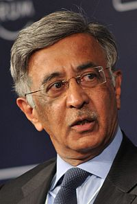

Baba Kalyani joined Bharat Forge in 1972 when the company's annual turnover
was about US $1.3 million; it was then a global company with 11 manufacturing
facilities spread across India, USA, Germany, Sweden, and China.
Kalyani pioneered the export of automobile components from India to China in
2002. Bharat Forge was the country's largest exporter of automotive components
for eight consecutive years, with exports contributing almost 50% to total
sales. Every second heavy truck manufactured in USA runs on a "Made by Bharat
Forge, India" front axle beam. Bharat Forge’s global customer base comprises 38
automobile manufacturers besides several tier suppliers to the industry.
He is the Founder Chairman of Pratham Pune Education Foundation, an NGO that is
engaged in providing primary education to children belonging to under-privileged
sections of the local community.
Since its inception in 2000, Pratham Pune has
made a difference in the lives of over 100,000 children in Pune society. Kalyani
is also providing free technical and vocational training to rural youth at a
government Industrial Training Institute [ITI] Taluka in Pune district that is
being run as a Public-Private partnership, a model being replicated in other
parts of the country.
Kalyani also supports various other NGOs and charitable
institutes engaged in education and assisting the disadvantaged and needy.
To contribute to a clean and emission-free environment, Kalyani set up Kenersys
Limited to manufacture various energy-efficient wind turbines for domestic and
international markets.
The company also has its own wind turbines in Maharashtra
which generate "green energy" for the group’s manufacturing operations. He is
also engaged in developing solar energy equipment for the non-conventional
energy sector.
In a joint venture with KPIT Cummins, Bharat Forge is developing
a hybrid solution that would contribute in the country being able to meet its
vehicular emission targets.
In SKF board of directors member since 2011.
Kalyani received the Indian government's Padma Bhushan award for contributions
to Trade and Industry, and was made Commander First Class of the Royal Order of
the Polar Star by the Swedish government in recognition of his contribution in
furthering trade and business cooperation between Sweden and India.
Other awards
include Global Economy Prize 2009 for Business by Kiel Institute, German
Businessman of the Year-2006 by Business India Magazine, Entrepreneur of the
Year 2005 for Manufacturing by Ernst & Young, and CEO of the Year 2004 by the
Business Standard group.